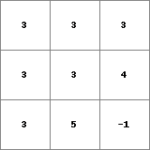
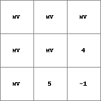
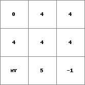
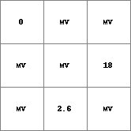
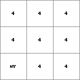

cover
Missing values substituted for values from one or more expression(s)
Result = cover(expression1, expression2, ..., expressionN)
This operator is used to cover missing values on an expression with values taken from one or more different expression(s). A (theoretically infinite) number of n expressions can be specified between the brackets in the command line, where expression1 is typed first and expressionN last. For each cell, the value on one of the expression1, expression2,...expressionN is selected and assigned to Result. Per cell, the value is assigned of the first expression between the brackets in the command line with a non missing value (i.e. the value on the expression with the smallest N, omitting expressions with a missing value on the cell under consideration). If all expressions have a missing value, a missing value is assigned to Result.
Using cover for covering expression1, expression2,...expressionN of data type ldd is quite risky: possibly it will result in a ldd which is unsound. If you do want to cover expressions of data type ldd use the operator lddrepair afterwards. This operator will modify the ldd in such a way that it will be sound, see the operator lddrepair.
This operation belongs to the group of Missing value creation
| Result1.map | Expr1.map |
|  |  |
| Result2.map | Expr1.map | Expr2.map | Expr3.map |
|  |  |  |